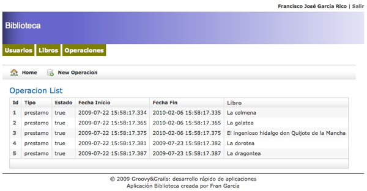

Construir la interfaz de usuario (I) - Ejercicios
Enlaces rápidos
Modificar la apariencia por defecto de la aplicación Biblioteca para que siempre tenga visible los enlaces a las diferentes partes del sistema, es decir, Usuario, Libros y Operaciones.
Para ello habrá que modificar el archivo grails-app/views/layout/main.gsp, así como la hoja de estilos web-app/css/main.css para que quede algo similar al siguiente esquema:

Al hacer clic sobre esos enlaces se mostrará el listado correspondiente.
Modificación de la interfaz de usuario
Realiza las modificaciones que estimes oportunas en la interfaz de usuario de la aplicación Todo teniendo en cuenta la información que debe gestionar un sistema de estas características.
Sistema de autenticación
Implementa un sistema de autenticación a la aplicación Todo similar al que acabamos de ver en la sesión.